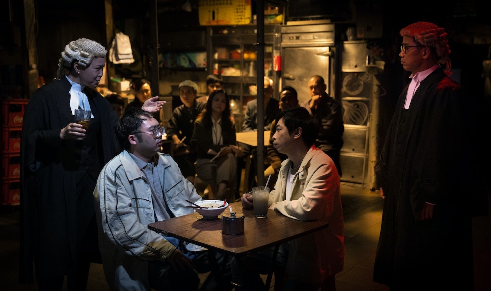

《正義迴廊》改編自2013年一宗轟動全港的「逆子弒親案」，張顯宗(楊偉倫 飾)聯同友人唐文奇(麥沛東 飾)於寓所內殺害父母，並進行肢解。案件進入法庭審訊程序，二人皆否認謀殺罪名，兩位資深大律師吳冠峰(林海峰 飾)和游嘉莉(蘇玉華 飾)分別代表二人上庭辯護，檢控官朱愛倫(周文健 飾)卻質疑二人早已部署殺人計劃，為財謀命似是毋庸置疑。然而在攻守互換後，吳和游兩位大律師施展各自辯才，揭露出案情中更為撲朔迷離之處，而唐文奇出庭自辯時更把一切指控推得一乾二淨。在一幕幕激烈的法庭辯論下，兩位被告上演出「天才」與「白痴」的戲碼，真相似乎越辯越模糊。九位不同背景的陪審員在休息室展開話語權的角力，同時陷入對與錯的正義思辯中。
Official Trailer 